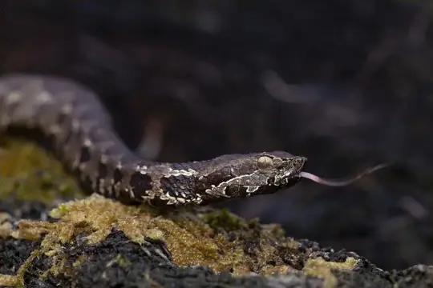
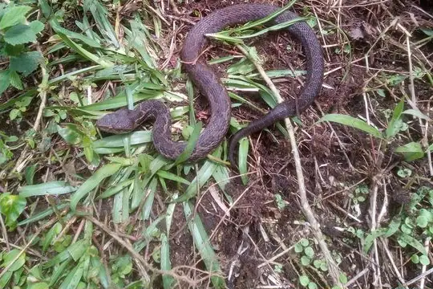
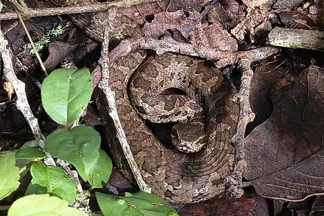

Cerrophidion
The genus Cerrophidion (family Viperidae) has 5 living species in SnakeList (all venomous), recorded in 7 countries.
- 5living species
- 5venomous
- 7countries
About the genus
A genus of the family Viperidae (vipers and pit vipers).
Species
Showing 5 species

Cerro Petlalcala Montane PitviperCerrophidion petlalcalensis
Costa Rica Montane PitviperCerrophidion sasai Godman's Montane Pit ViperCerrophidion godmani
Godman's Montane Pit ViperCerrophidion godmani Honduras Montane PitviperCerrophidion wilsoni
Honduras Montane PitviperCerrophidion wilsoni
Tzotzil Montane Pit ViperCerrophidion tzotzilorum
No snakes in Cerrophidion match.
About the genus Cerrophidion
- Distribution: living species recorded in 7 countries, on one continent: North America.
- Family: Viperidae.
- Countries and territories: Costa Rica, El Salvador, Guatemala, Honduras, Mexico, Nicaragua, Panama.
Compare its species
Its living species side by side. Lengths come only from SnakeList’s reviewed, sourced accounts; the others are left blank rather than guessed.
| Species | Venom | Recorded in | Adult length (reviewed accounts) |
|---|---|---|---|
| Cerro Petlalcala Montane Pitviper Cerrophidion petlalcalensis | Venomous | 1 country (North America) | No reviewed account yet |
| Costa Rica Montane Pitviper Cerrophidion sasai | Venomous | 2 countries (North America) | No reviewed account yet |
| Godman's Montane Pit Viper Cerrophidion godmani | Venomous | 6 countries (North America) | No reviewed account yet |
| Honduras Montane Pitviper Cerrophidion wilsoni | Venomous | 3 countries (North America) | No reviewed account yet |
| Tzotzil Montane Pit Viper Cerrophidion tzotzilorum | Venomous | 1 country (North America) | No reviewed account yet |